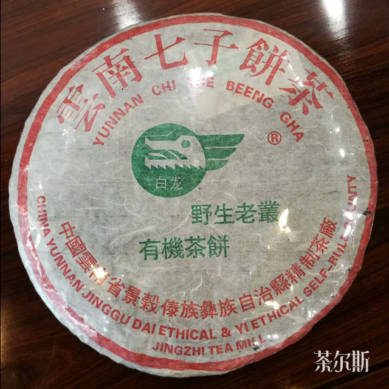
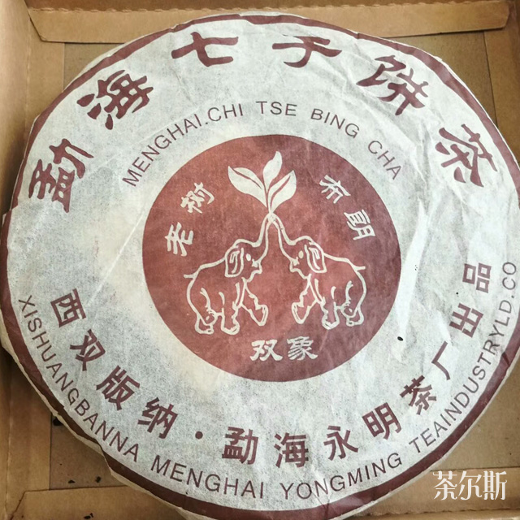

07 OCT
为何投资中期茶？
非常认同著名茶藏家吴家荣先生提倡的普洱哲学 "品老茶，喝熟茶和中期茶，藏生茶" 原因是新的生茶苦涩寒冷，不可多喝；老茶好喝但价格不菲；如果只喝熟茶，又未免太单调乏味；而中期茶价格相宜，有可喝可存的优点，投资价值较高。 中期茶是指二十世纪九十年代初至二十一世纪初云南各大国营茶厂转制，期间所生产的存期大约10至20年左右的普洱茶。
当然中期茶是个动态的概念。 随着时间推移，今天的新茶将会是中期茶，现在的中期茶将会变老茶。 普洱茶以七年为一期，第一个七年为转化期；第二个七年可以喝了；第三个七年后将会转化到圆润香醇；在这过程中体验其变化过程，也是一种乐趣。但大多数的普洱茶痴都是50多岁的人，要等20年才喝，实在有点夸张，提倡买中期茶，那便皆大欢喜。
"新的生茶苦涩寒冷，不可多喝；老茶好喝但价格不菲；如果只喝熟茶，又未免太单调乏味；而中期茶价格相宜，有可喝可存的优点，投资价值较高。"
所为"从来佳茗似佳人"不少知名普洱茶起初都如含羞的少女，只有到中期阶段才像绽开的鲜花，芳香醉人。